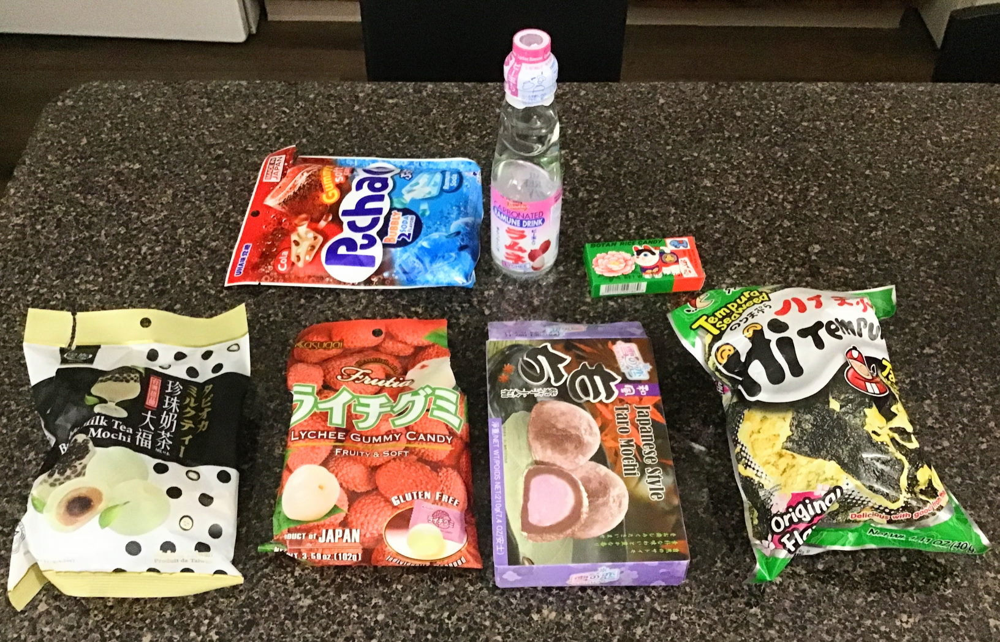
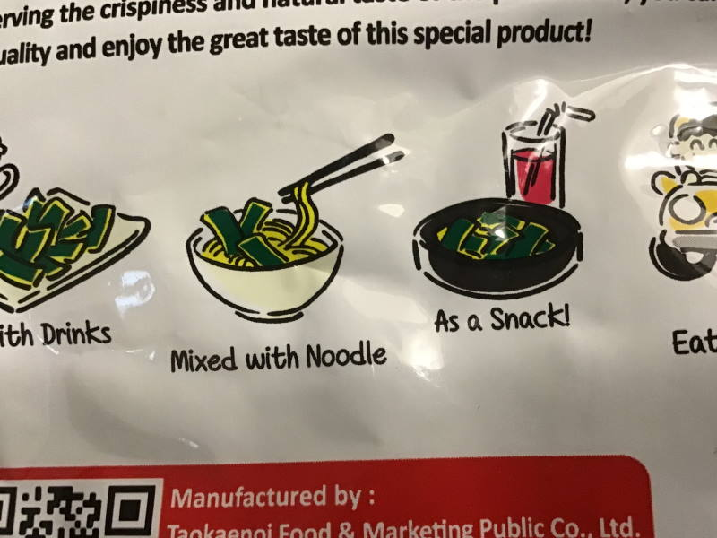
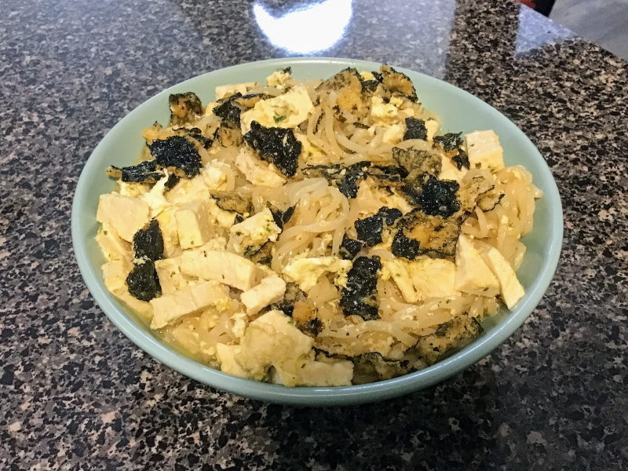

yesterday a friend of mine took me to a cool store i've never been to before called World Market. it's laid out like a target or other department store, with food and various home goods, except a lot of the items sold there come from all sorts of different countries and cultures, most of which are usually very hard to find in the US normally. they had a HUGE snacks and candy section, full of goodies from japan, taiwan, germany, england, spain, and all sorts of other places. i love unique japanese junk food, so i bought a bunch of stuff there that looked interesting! it all ended up being really good, so here's my thoughts on each item.
if you've ever had hi-chew infrusions, then this candy will seem familiar. it's a soft, chewy candy like hi-chew, and just like infrusions, these also have little chunks of extra gummy bit buried inside. unlike hi-chew however, these are all soda flavored, and they're actually surprisingly good! i was a bit apprehensive at first because i've had the cola and ramune hi-chew before and i really wasn't a fan, but these are way better! i'd totally recommend giving them a try. the extra gummy bits and "fizzy tablets" mixed into the candy make it a really unique and interesting texture experience.
as a fan of both boba tea and mochi, i couldn't pass up this wild-looking opportunity. true to its name, the filling of these mochi tastes EXACTLY like brown sugar milk tea and tapioca at the same time. it's like the essence of boba tea itself concentrated and distilled into a solid piece of cake. wild!!!
i love all things lychee, so i had to grab these. this candy is pretty straightforward - just a chewy, gummy disc FULL of lychee flavor! the texture is sorta like a gummy worm, except these have a more matte/rough finish and are harder to bite through (have more surface tension (?) or something like that). i just can't get over how much lychee is crammed into each piece! it's more than enough to satisfy this lychee lover.
not a whole lot to say about these other than they're just really good mochi! i love taro almost as much as i love lychee, so i was glad to find these. the actual taro flavor is a bit mild in these - i would've appreciated a flavor concentration more like the Fruitia gummy candies had, but they're still not bad!
seaweed is one of those flavors that i've never really been able to decide if i like or not, so i thought i'd grab these just to give it a try again and see what i think of it this time. the verdict? i like these! they're a fried, crispy, chip-like snack with tempura flavoring, so the seaweed flavor and texture is a bit toned-down while still being present. i'm gonna say that i like seaweed flavor when it's used in combination with something else, like in these snacks.
the back of the bag suggests adding them to ramen, so i thought i'd give it a shot:
i think it turned out pretty well actually! the seaweed bits add a nice crunchy texture that contrasts well with the softer tofu and noodles. if you're looking for something interesting to spice up your ramen with, i totally recommend it!
my friend loves these and specifically recommended them to me, so let's give them a try! things get interesting right off the bat. they're wrapped in some sort of thin paper (potato starch based, according to the ingredients list) that you're supposed to eat, not peel off! the wrapping doesn't really have much of a taste at all and quickly dissolves away in your mouth. after that, you're left with a piece of soft, chewy, very sweet, and very rice-flavored candy. i'm a big fan of the rice flavor here, but i think they might just be a little too sweet for me. they're still good though and i'll probably pick up a box of them again next time i come across one!